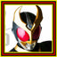

Player profile
lostvayne
Rank #2server.eurobattle.netSeason 2
Most played · デンジ
Matches4325 wins · 18 losses
Win rate58%
Avg K / D / A54.8 / 36.3 / 9.4
Avg APM131
Avg damage dealt291.0k
Avg damage taken168.6k
Heroes played
Explore heroes →| HERO | MATCHES | WIN RATE | AVG K / D / A | AVG DMG |
|---|---|---|---|---|
デンジMost played | 5 | 60% | 59.6 / 36.4 / 10.2 | 300.9k |
Seha Lee 2 | 4 | 75% | 56.0 / 42.2 / 11.5 | 317.5k |
復讐者 | 4 | 50% | 60.5 / 34.0 / 9.8 | 296.0k |
Uchiha Itachi | 4 | 50% | 53.0 / 37.0 / 10.0 | 302.8k |
『Shadow』 | 3 | 67% | 50.3 / 37.3 / 8.7 | 295.8k |
黒崎 一護 | 3 | 33% | 57.0 / 36.3 / 6.0 | 277.9k |
Seha Lee | 2 | 50% | 59.5 / 39.0 / 6.5 | 333.3k |
黒崎 一護断界 | 1 | 100% | 55.0 / 29.0 / 9.0 | 233.7k |
Kiryuu Sento | 1 | 100% | 70.0 / 27.0 / 9.0 | 305.6k |
Synthesis Thirty | 1 | 100% | 48.0 / 41.0 / 12.0 | 220.7k |
Kenshin | 1 | 100% | 79.0 / 30.0 / 8.0 | 380.7k |
不明なる共演者 | 1 | 100% | 57.0 / 31.0 / 7.0 | — |
The Honored One | 1 | 100% | 59.0 / 27.0 / 11.0 | 323.4k |
Zero | 1 | 100% | 73.0 / 22.0 / 10.0 | 309.7k |
千子村正 | 1 | 100% | 43.0 / 47.0 / 15.0 | 300.2k |
ヤト,ヤボク | 1 | 100% | 63.0 / 27.0 / 16.0 | 299.0k |
Blade | 1 | 100% | 60.0 / 37.0 / 7.0 | 336.3k |
レゼ | 1 | 100% | 60.0 / 42.0 / 14.0 | 358.3k |
平和島 静雄 | 1 | 0% | 16.0 / 14.0 / 4.0 | 83.4k |
【Silver Arbiter】 | 1 | 0% | 27.0 / 46.0 / 11.0 | 269.2k |
仮面ライダーエボルブラックホールフォーム | 1 | 0% | 47.0 / 37.0 / 7.0 | 305.3k |
Kenshiro | 1 | 0% | 59.0 / 40.0 / 5.0 | 292.0k |
 仮面ライダーアギト | 1 | 0% | 55.0 / 42.0 / 8.0 | 292.4k |
孫悟飯 | 1 | 0% | 37.0 / 45.0 / 7.0 | 207.6k |
【Joker】 | 1 | 0% | 31.0 / 42.0 / 12.0 | 148.4k |
Averages use recorded statistics only; unavailable historical values are shown as —.
Recent matches
Open a match for its scoreboard and kill matchups.
LOSS59:35
MCB #2000252
21 Nov 2026 · 18:21 WIB
40.0 / 41.0 / 14.0View match →
LOSS59:29
MCB #2000251
21 Nov 2026 · 16:52 WIB
59.0 / 36.0 / 7.0View match →
LOSS51:49
MCB #2000250
21 Nov 2026 · 03:14 WIB
16.0 / 14.0 / 4.0View match →
WIN69:00
MCB #2000240
18 Nov 2026 · 00:20 WIB
65.0 / 49.0 / 16.0View match →
WIN54:24
MCB #2000239
17 Nov 2026 · 00:27 WIB
55.0 / 29.0 / 9.0View match →
WIN58:52
MCB #1000075
16 Nov 2026 · 21:21 WIB
70.0 / 27.0 / 9.0View match →
WIN59:14
MCB #1000074
16 Nov 2026 · 20:06 WIB
59.0 / 33.0 / 11.0View match →
LOSS61:55
MCB #2000237
16 Nov 2026 · 19:02 WIB
42.0 / 42.0 / 10.0View match →
WIN63:33
MCB #2000236
15 Nov 2026 · 23:57 WIB
68.0 / 41.0 / 10.0View match →
LOSS66:29
MCB #1000072
15 Nov 2026 · 20:32 WIB
59.0 / 38.0 / 5.0View match →